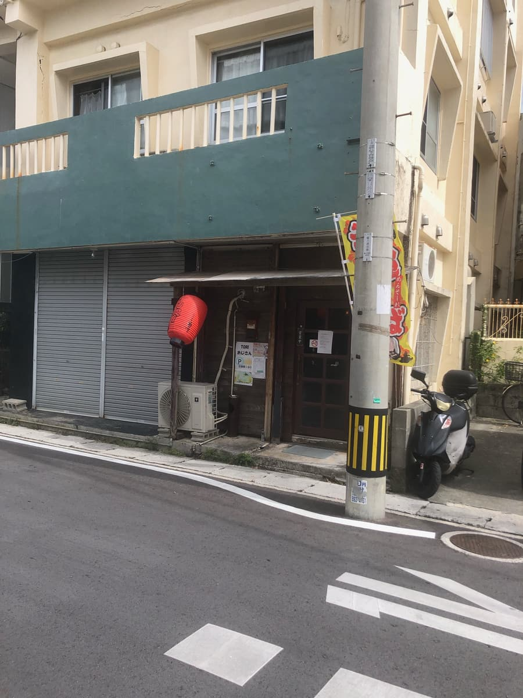
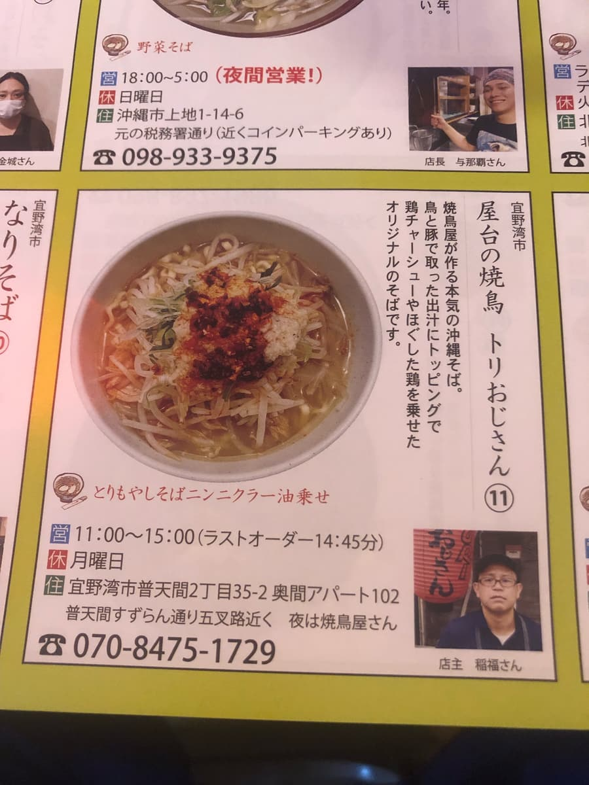
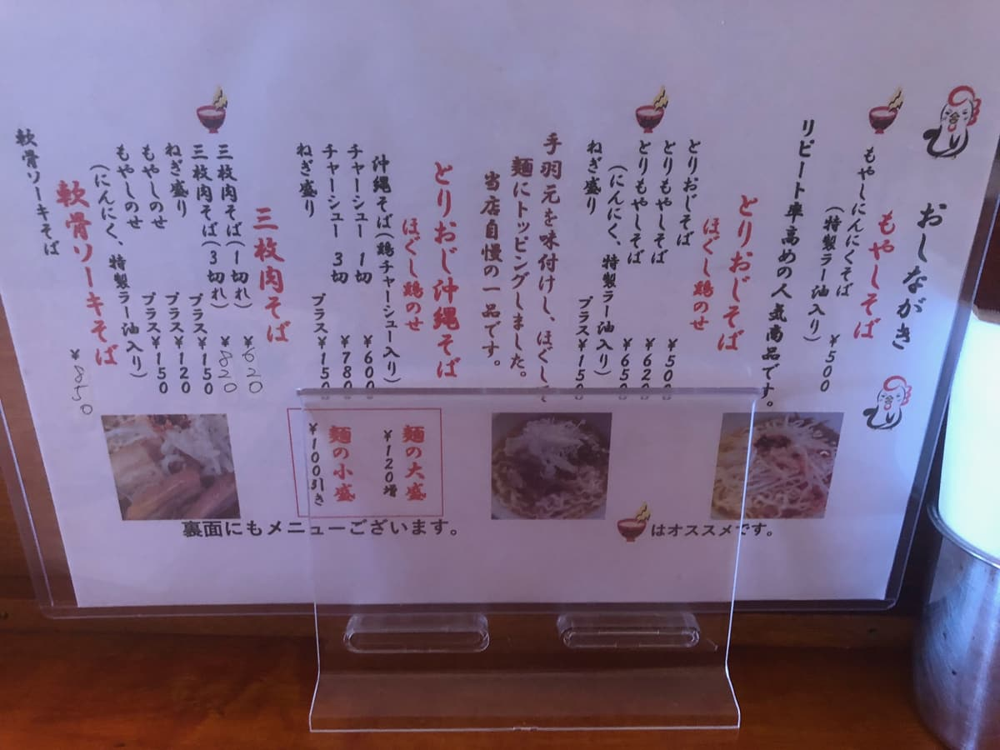
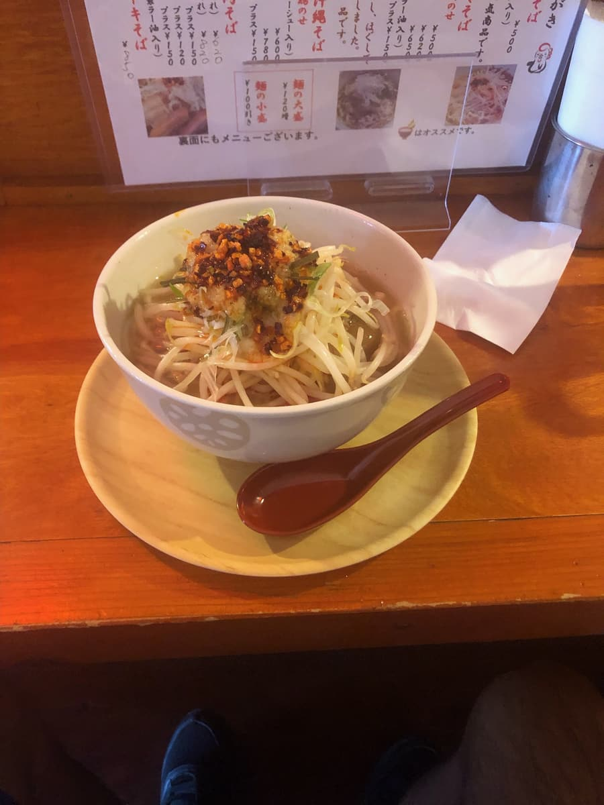

I ate here in October 2023. This shop is a participant in the "13th Okinawa Soba Stamp Rally (Oct 1, 2023 – Feb 29, 2024)," and I went as my 10th of 34 shops 😊

When I went inside, there were a few customers. It seems to be a yakitori shop at night, and inside it looked like a yakitori counter lol

I decided to order the "Chicken Bean Sprout Soba with Garlic Chili Oil" introduced in the stamp rally booklet.


First, a sip of the soup. The stamp rally booklet described it as "Serious Okinawa soba made by a yakitori shop. A broth made from chicken and pork," and since it's a yakitori shop, the chicken broth base comes through strongly. Solidly tasty 😁
After tasting the chicken broth soup a few times, I dissolved the garlic and special chili oil that had been placed on top of the bean sprouts into the soup 😊 Then the light chicken broth soup changed into a spicy base. My body heated up and I started sweating (;^ω^) A nice accent.
The crunchy bean sprouts are topped with shredded chicken from seasoned drumettes, and when you eat the bean sprouts, shredded chicken, and wavy noodles together, the spicy soup clings to them and it's delicious 🤗
Rating (10/15): Solidly tasty. Since it's Okinawa soba from a yakitori shop, the chicken broth soup comes through nicely. When you mix in the garlic and special chili oil, the flavor turns spicy, and that's nice too. At ¥650 it's reasonable in a way other shops aren't, but I thought the shredded chicken topping was a bit on the small side.
Noodles: ★★★☆☆（3）
Soup: ★★★✬☆（3.5）
Toppings: ★★★☆☆（3）